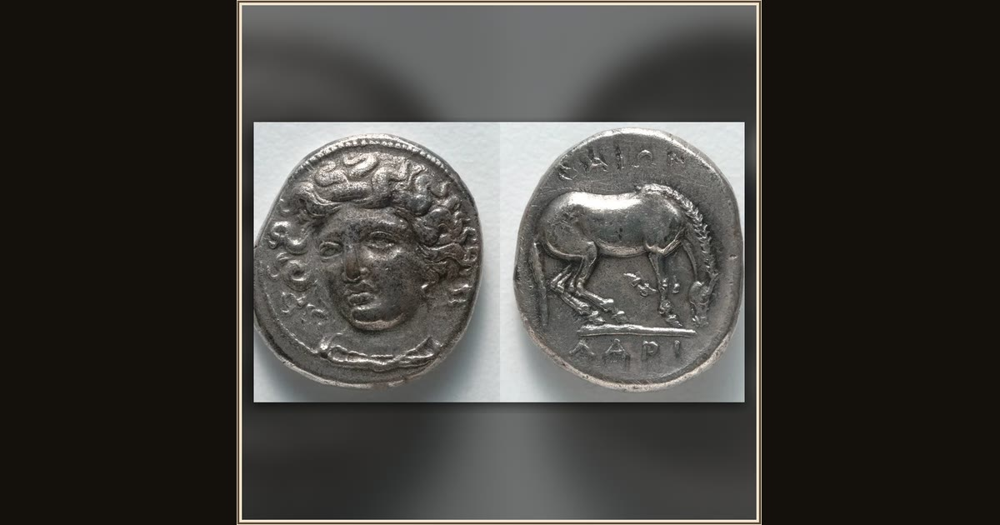

Drachm: Head of Larissa (Nymph) (obverse); Horse (reverse)
Greek, minted at Larissa (Thessalia) · c. 375–320 BCE · cma
A silver drachm minted at Larissa shows the nymph on one face and a horse on the other, echoing Socrates' opening remark about Thessalian skill in riding. (70a) Explore its place in Plato's Dialogues, Meno, section 1.